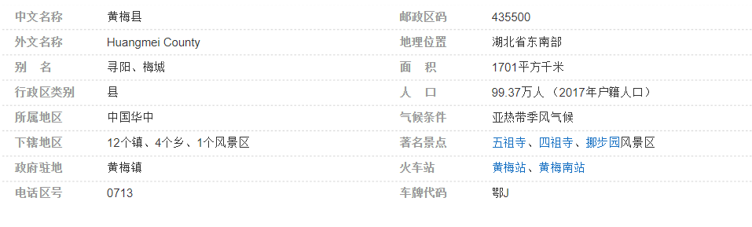

黄梅县
黄梅县，隶属于湖北省黄冈市，为武汉城市圈重要组成部分，位于长江中游北岸，大别山尾南缘，鄂皖赣三省交界，南临长江，自古称“七省通衢”、“鄂东门户”。截至2018年，全县下辖12个镇、4个乡、1个风景区，版图面积1701平方千米，2017年户籍人口99.37万人。
黄梅县地势北高南低，呈三级阶梯状倾斜，北部山地属大别山余脉，中部为丘陵及垄岗平原，中南部为湖泊，南部为滨湖沉积平原和沿江冲积平原，平原和湖泊占全县总面积78%。属亚热带季风气候，全年气候温暖，年降水量1270毫米，年均气温16.8℃。黄梅是佛教禅宗发祥地，是全国五大剧种之一黄梅戏的发源地，还是闻名全国的“挑花之乡”、“楹联之乡”、“诗词之乡”、“武术之乡”。
2017年，黄梅县实现地区生产总值206.45亿元，同比增长7.4%；城镇常住居民可支配收入27169元，增长8.5%；农村常住居民可支配收入13496元，增长9.1%。
